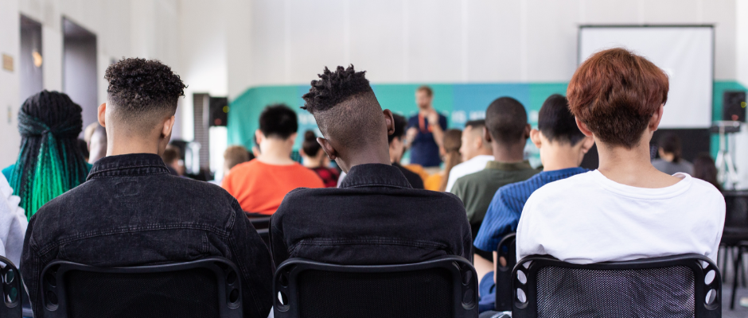

“Educar é construir relações saudáveis”. Desde o primeiro contato com a “criatura” Léo Chucrute, a percepção e o sentimento de que o outro é importante é real. Ao conhecermos um pouco de sua história de vida, conseguimos entender um pouco da escolha pelo outro e como isso se concretiza na missão de educar. Educar na sociedade brasileira é vital como o ar que respiramos. A situação em que se encontra a Educação faz com que todos nós profissionais, cidadãos, tenhamos um olhar sensível e propositivo para ela. A criação do Instituto Léo veio para transformar esse olhar e sentimento em ações concretas, para melhorar a sociedade que vivemos. Precisamos de uma educação de qualidade capaz de mudar a vida de todos, pois, como afirma o grande educador Paulo Freire - “Se a educação sozinha não transforma a sociedade, sem ela tampouco a sociedade muda.”
A partir de escolhas no campo educacional, entre os muitos desafios existentes para transformar a sociedade, propomos: - Diminuir a evasão escolar no Ensino Básico: Ensino Fundamental e Ensino Médio. - Aumentar a escolaridade de todos, independente da idade e escolaridade. - Fomentar novas formas de Educar e de Ensinar e Aprender. - Praticar ações para uma Educação Integral.
A possibilidade da melhoria da educação, como ferramenta de transformação social, é uma realidade no Brasil, visto a partir da história e dos resultados alcançados nas últimas três décadas pelo “Terceiro Setor” que Segundo Boaventura de Souza Santos, são instituições que tentam realizar o compromisso prático entre a eficiência e a equidade em atividades sociais, adotando a flexibilidade operacional típica de pessoas privadas sem prejuízo da busca de equidade social inerente à qualquer instituição pública. O acúmulo de experiências e conhecimento das Redes de Ensino Progressão e ZeroHum poderão ser compartilhadas para a melhoria da educação, apresentando caminhos, inovações, nunca substituindo o papel do Estado na execução da Política Pública de Educação, mas agregando valores, pois a educação escolar, a partir da década de 90 e constituiu-se em um campo fértil para a consolidação de ações e proposições do Terceiro Setor.
Organização de pessoas que têm em comum a educação, fomentando ações e projetos para a sociedade, sendo o foco os alunos nas Escolas públicas municipais, estaduais e federais. Uma sala de aula sem muros, com professores e alunos ensinando e aprendendo em todo lugar e de toda forma.
A experiência e a história de sucesso dos Cursos e Colégios criados pelo Léo e espalhados pelo Estado do Rio de Janeiro transformados em ações para fomento de política pública no campo da Educação de qualidade. As ações e projetos serão articulados de acordo com a realidade de cada cidade. Não apresentaremos Projetos prontos e acabados. Com nossa experiência e conhecimento iremos somar com os processos educacionais existentes onde estaremos atuando, transformando em Projetos para construirmos Políticas Públicas nas áreas de Educação e Cultura.
Vivenciar a Educação, um direito de todos que precisa de cuidado e atenção e envolvimento constante e de todos. A partir daí, realizar atendimento por meio de ações e projetos diferenciados, de acordo com a realidade dos processos educacionais existentes na cidade em que estaremos atuando, visando a melhoria da qualidade da Educação.
Uma sociedade melhor, fomentando Educação e incentivando o exercício de uma cidadania solidária e colaborativa.
Diretor Presidente
Diretor Vice-Presidente
Secretária
Tesoureiro
Conselho Fiscal
Conselho Fiscal
Conselho Fiscal
Contribua com as nossas ações para que mais pessoas sejam beneficiadas. Faça uma doação, seja voluntário, visite uma instituição parceira e compartilhe essa ideia.
Faça a diferença!Você também pode fazer parte das nossas ações. Envie os seus dados, entre para o nossos registros e receba informações sobre como participar dos nossos projetos.
Junte-se a nós!“O homem, como um ser histórico, inserido num permanente movimento de procura, faz e refaz o seu saber.”
PAULO FREIRE